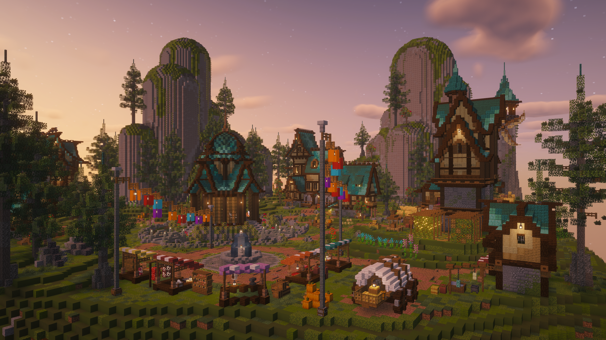

Vanilla+ Survival
Classic Minecraft survival with thoughtful quality-of-life additions.
A simple Vanilla+ Minecraft survival server built to keep Minecraft feeling like Minecraft.
DiceSMP keeps the classic survival loop at the heart of the experience. Explore, build, team up, and make the world your own with quality-of-life additions that stay out of your way.
Get to know the server ↘“55 plugins behind the scenes,
but Minecraft still feels like Minecraft.”
Everything you need for a great survival world, nothing that gets in the way.
Classic Minecraft survival with thoughtful quality-of-life additions.
Play together across Java and Bedrock Edition.
02 / CONNECTProtect your land, team up, and build a place that feels like yours.
03 / BUILDNo virtual coins. Diamonds stay at the heart of player trading.
04 / TRADEChat with nearby players while exploring or working on a build.
05 / HANG OUTCustom items, cosmetics, shops, and useful tools for everyday play.
06 / DISCOVER✳ Plus land protection, random teleport, inventory recovery, voting rewards, and more.
Find a quiet corner to build or set out and see where the path takes you. There's room to do both.
Find your way in ↗Plenty of room to explore and build.
A fresh frontier each month.
New journeys, month after month.
Our own custom plugin adds a few small touches to the world.
A bit of color for your next adventure. Pick a balloon and bring it along.
Automatic restarts help keep the server running smoothly.
Feeling lucky? Challenge someone to a casual flip using diamonds.

Friends on Java and Bedrock can share the same DiceSMP world. Join from the edition you already love and get building.
Catch the community in action and come say hi.
Join the DiceSMP community, keep up with server updates, meet other players, and find people to play with.
Voting helps new players discover DiceSMP. Thanks for supporting our little corner of Minecraft.
Server softwarePurpur 1.21.11
CrossplayGeyser + Floodgate
Plugins55 plugins
EconomyPlayer trading with diamonds
MiniMOTD · nightcore · ProtocolLib · ServerChangelogs · SkBee · AngelChest · AxInventoryRestore · AxiomPaper · BetterTeams · ChatGames · ChestSort · Chunky · Citizens · Clumps · REDACTED_01 · DiceCustomPlugin · DiscordSRV · Essentials · EssentialsChat · EssentialsGeoIP · EssentialsSpawn · ExcellentCrates · FastAsyncWorldEdit · floodgate · Geyser-Spigot · REDACTED_02 · InteractiveChat · InteractiveChatDiscordSrvAddon · ItemsAdder · LagFixer · REDACTED_03 · Multiverse-Core · REDACTED_04 · REDACTED_05 · packetevents · PlaceholderAPI · pwarps · Shopkeepers · Simple_RTP · SkinsRestorer · Skript · skript-gui · skript-worldguard · TAB · Vault · ViaBackwards · ViaVersion · voicechat · VoidGen · Votifier · VotingPlugin · REDACTED_06 · REDACTED_07 · REDACTED_08 · REDACTED_09